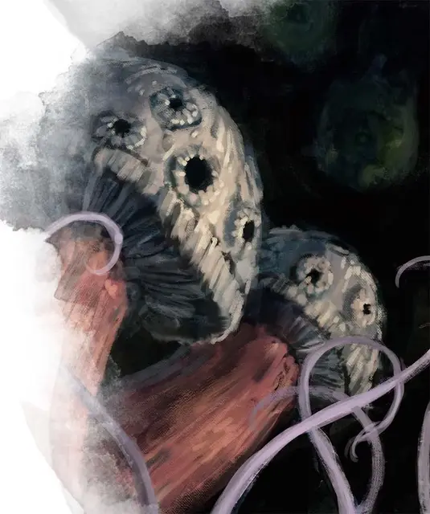

Визгун
Shrieker
Среднее Растение, без мировоззрения

Класс Доспеха 5
Хиты 13 (3к8)
Скорость 0 футов
| мод | спас | ||
|---|---|---|---|
| СИЛ | 1 | −5 | −5 |
| ЛОВ | 1 | −5 | −5 |
| ТЕЛ | 10 | +0 | +0 |
| мод | спас | ||
|---|---|---|---|
| ИНТ | 1 | −5 | −5 |
| МДР | 3 | −4 | −4 |
| ХАР | 1 | −5 | −5 |
Иммунитет к состояниям ослепление, испуг, глухота
Чувства слепое зрение 30 футов (слеп за пределами этого радиуса), пассивное Восприятие 6
Опасность 0
Бонус мастерства +2
Среда обитания Подземье
Особенности
Обманчивая внешность. Пока визгун остаётся без движения, он неотличим от обычного гриба.
Реакции
Визг. Если в пределах 30 футов от визгуна появляется яркий свет или существо, визгун испускает визг, слышимый на расстоянии 300 футов. Визгун продолжает кричать, пока не пройдёт 1к4 раунда после того, как источник беспокойства окажется за пределами его восприятия.
Описание
Визгуны — это грибы размером с человека, которые издают пронзительные вопли, отпугивая потревоживших их существ. Другие существа могут использовать их как сигнал о приближении потенциальной жертвы, а различные разумные расы Подземья разводят визгунов на окраинах своих поселений, чтобы отвадить непрошенных гостей.
См. дополнительно статью: "Бестиарий: Грибы"